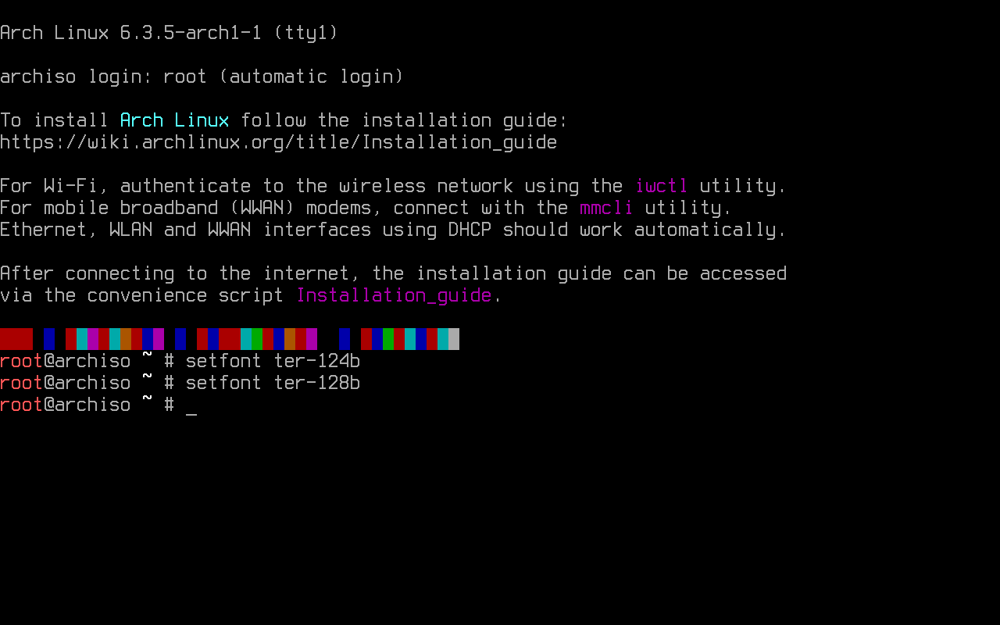

Pre-Installation
The very first thing
This Arch Linux install guide illustrates the process on a virtual machine. Every command and code snippet will be presented within code elements for easy identification and differentiation from regular text, such as this one:
This allows the reader to conveniently use the commands without ever reading all of these words (although it is not recommended).Installation image
To obtain an installation image, it is suggested to download an ISO file via HTTP from one of the mirror sites listed in the Arch Linux HTTP Direct Downloads. It is recommended to verify the ISO signature to make sure it is safe to use.
Once the site of choice has been selected, it greets with an index that contains the needed files.

Downloading the ISO file and one of the checksum txt files is necessary to see if the image matches the checksum.

It does! The SHA256 checksum can also be seen on the official website.
If the reader is extra paranoid, the ISO PGP signature (the iso.sig file also found at the index) can be downloaded in the same directory and verified (assuming that GnuPG, a libre encryption tool is already installed) with:

It is. It also matches the key fingerprint of the Arch Linux Developer who signed the ISO.

Installation medium preparation
Archmoured assumes that the reader already knows how to prepare an installation medium and boot from a live environment. It could be said that it is left as an exercise.
Important: For this specific setup, it is necessary to be booting in UEFI mode. If not, both disk partitioning and bootloader used in this guide are going to be incompatible with the reader's system.
Protip: Ventoy gets the most out of an installation media (most likely an USB drive).
Into the live environment
Once booted, a shell prompt is presented.

(Optional) Set console font
Those small characters may not be to everyone's liking. With the aim of making the shown screenshots readable, a larger font is selected.

Console fonts can be found in usr/share/kbd/consolefonts/ and set with setfont.

(Optional) Set console keyboard layout
The default console keymap is US. All available layouts can be found in /usr/share/kbd/keymaps. For example's sake, this guide will show how to set up the Latin American layout (la-latin1).
To list all the available keymaps, the command locatectl list-keymaps is used. Grep comes in handy when searching for a more specific result. Searching for this specific keymap can be done with:
{kind=link}
{kind=link}
Once located, it can be set up for the current session. This is done by using loadkeys. To set the already located layout, the loadkeys command followed by the chosen layout is used:

And there it is!
Boot mode verification
By running the following command, the boot mode is verified:

Since this virtual machine has EFI enabled, it shows the directory without error (and thus is booted in UEFI mode). If this directory does not exist on the system, the reader is strongly urged to check again and be sure that the system is booting neither from BIOS nor CSM.
Internet connection
A network connection is required. An example won't be shown this time, although it is pretty straight-forward.
Protip: When using Wi-Fi, the live environment offers iwctl.
After setting it up, the connection can be verified by pinging some host. It is traditional to test a connection by tickling Google's DNS (8.8.8.8):

It stops when interrupted with Ctrl+c.
System clock configuration
In the live environment, System-timesyncd is enabled by default and time is synced automatically once the connection to the internet is established. By running timedatectl, it can be ensured that the system clock is accurate:
It must show an accurate Universal Time Clock, that system clock is indeed synchronized, and that
NTP service is active. If for some reason NTP is inactive, it can be enabled again by using the set-ntp command.
It takes a boolean argument (true or false) and controls whether network time synchronization is active and enabled. If
it's true, this enables and starts the first existing network synchronization service. It is then enabled by running
the following command:
Disk partitioning
Disks are assigned to a block device, a special file that provides buffered access to a hardware device. Using fdisk allows to identify such devices:

This example shows that the storage device is handled by the kernel's
SCSI driver subsystem, thus it starts with sd. It sorts
the devices from first to last discovered alphabetically. The device used on this guide is the `sda device shown
in the image, although it might not be the same for the reader. Results ending in rom, loop or airoot may be ignored.
Guidance through the size of every block device is highly encouraged (as in not partitioning that 8G device the live environment booted from when the target device has a 1TB HDD).
To modify partition tables, fdisk may be used.

This setup uses an encrypted root partition and an EFI mode partition only. Usage of swap is left to the reader's discretion.
Note: From the author's perspective, it is not necessary since his machine has enough RAM for what he has ever done and hibernation does not match his usercase.

A new empty GPT partition label (by typing g)
is created, for these partitions are expected to boot in UEFI mode.
Adding a new partition is done by typing n. To make of it the EFI system partition, the defaults for partition number and first sector are selected.
In the last sector, the partition's size must be specified. This one must be at least 300 MiB and no more than 1 GiB if multiple kernels are going to be installed (most of this later on). The author chooses to install 512 MiB, for he likes powers of two.
To give an example, the partition type is changed to EFI System by typing t and stating the partition type
(1 for this one).

By typing n again and selecting the default option for everything, the partition table has a second partition
with the default partition type: Linux filesystem.
Even though it is not necessary, the image shows the verified partition table through v and the table itself
with p. Now it must be written to the disk and exit by typing w.
In order to use luks for the created linux filesystem, an encrypted logical container must be initialized by using cryptsetup:
This prompts the user to create a passphrase.
Via cryptsetup, the container must be opened followed by a placeholder. Any name suffices, but "crypt" is chosen by sheer exemplification:
The user must enter the created passphrase.

Partition formatting
Once the partitions have been created, both must be formatted with their appropriate file system.
Formatting the EFI partition with FAT32 is done through:
On the other hand, the root partition is formatted to btrfs. This filesystem has been chosen for its properties, such as compression and snapshot handling:
Partition mounting
Root and home subvolumes are created within the btrfs partition. This eases the use of snapshots since this guide uses timeshift for its convenience out of the box. To manually mount a file system located on a partition to a directory, mount is used:
The /mnt directory must be unmounted so that it can be used when mounting the partitions:

The recently created subvolumes must be mounted.
There are several options specified:
-
noatime: fully disables writing file access times to the drive every time you read a file. -
nodiratime: disables the writing of file access times only for directories while other files still get access times written. -
compress=zstdmakes use of zstd. -
space_cachegives control the free space cache. The free space cache greatly improves performance when reading block group free space into memory. Version 2 adds a new B-tree called the free space tree, addressing the issue that version 1 may have on large filesystems. -
ssdoptimizes the process on Solid State Drives.
Using the --parents option to make parents directories as needed. It is needed for the home subvolume
and also the EFI partition.
Mounting home subvolume with the options that were given before:
mount -o noatime,nodiratime,compress=zstd:1,space_cache=v2,ssd,subvol=@home /dev/mapper/crypt /mnt/home
Mounting EFI partition on boot. No option is needed: